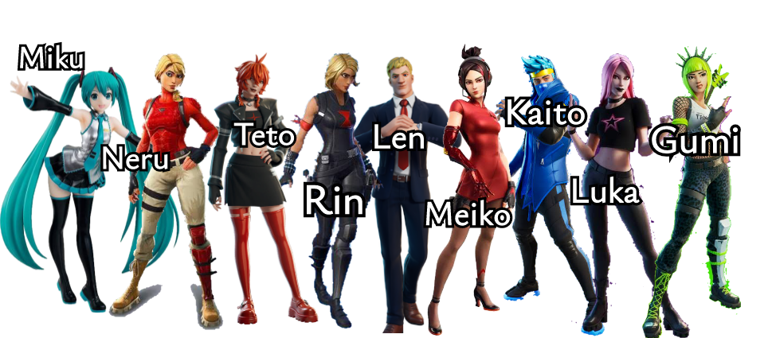

Hatsune Miku Revoluciona el Gaming con su Propio Juego de Disparos: Fortnite
En un movimiento sin precedentes que ha dejado en shock al internet entero, la idol virtual más icónica del mundo, Hatsune Miku, se abre camino en el mundo del gaming con su propio juego battle royale, Fortnite! Así es como Miku sube de nivel, entrando al campo de batalla en un juego caótico y colorido.
¿De qué trata el juego?
Imagina decenas de jugadores lanzandose hacia un vibrante escenario, encarnando a diferentes avatares y todos con el objetivo de sobrevivir para ser el último en pie.
El combate ocurre en un mapa gigantesco en el que están repartidas armas y recursos, te enfrentas esporádicamente a otros jugadores, los despistas con bailes de idol, o te proteges construyendo como en Minecraft el juego creado por Hatsune Miku.
Un juego para los fans.
Crypton Future Media ha querido lanzar este juego como un regalo para los fans de Hatsune Miku, por eso ha colaborado con un pequeño estudio indie, Epic Games, para crear este videojuego y hacerlo free to play y además lo han lanzado en todas las plataformas, consolas y electrodomésticos.
Además para los fans del vocaloid, han incluído skins de otros vocaloid que pueden ser seleccionados por los jugadores para jugar con ellos como Akita Neru, Teto, Rin, Len, Meiko, Kaito, Luka & Gumi.
Reacciones
Desde el anuncio, el internet explotó en alegría. Las redes sociales están inundadas de el hashtag #MikuRoyale, y también abundan los fanarts en XiaoHongShu y en la deep web.
El juego de Hatsune Miku es espectacular, me encanta poder jugarlo en mi refrigerador
Me he vuelto adicto, me encanta jugarlo en mi Atari-1600
Porfavor descarguenlo y pruebenlo ustedes mismos, nos vemós la próxima!